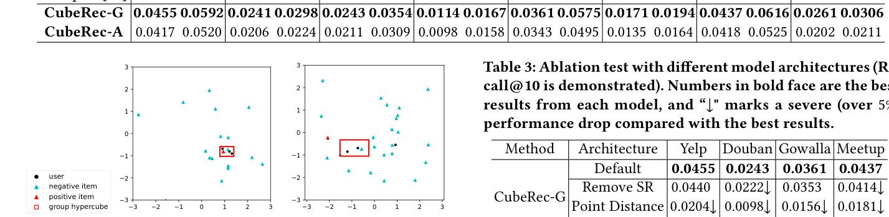

Thinking inside The Box: Learning Hypercube Representations for Group Recommendation (跳出点嵌入：用超立方体表示群组偏好)
- 会议/期刊: SIGIR 2022
- 作者与机构: Tong Chen, Hongzhi Yin, Jing Long, Quoc Viet Hung Nguyen, Yang Wang, Meng Wang（昆士兰大学、格里菲斯大学、合肥工业大学）
- 推荐链路定位: 召回（群组-物品全库候选排序）
- 研究方向: 社交与群组推荐 / 自监督对比学习与交互去噪
- 论文原文: https://arxiv.org/abs/2204.02592v3
- 开源代码: https://github.com/jinglong0407/CubeRec
TL;DR (1分钟核心速览)
群组推荐长期把多名成员的点嵌入压缩成单个群组点向量，既丢失多面性个人偏好，也不符合"成员在可协商区间内妥协"的真实决策过程。本文改用超立方体（中心 \(\mathbf{c}\)+ 非负偏移\(\mathbf{o}\)）表示群组，给出几何包围与注意力两种融合算子、点到超立方体的内外双重距离，并利用两组交集共享的 relay users 构造自监督。在 4 个真实数据集、8:1:1 划分、全库未交互物品排序协议下，CubeRec-G 相对最强基线 GroupIM 平均提升 Recall@10 14.4%、NDCG@10 23.6%。
Background & Motivation (背景与核心矛盾)
- 主流范式: 偶发群组（occasional group）group-item 交互极稀，标准做法是先由稠密 user-item 交互学点嵌入，再用平均池化、注意力聚合或社会影响加权得到群组点嵌入，最后以欧氏/余弦距离排序。
- 前人局限一: 点嵌入在每个维度只能取定值，无论均值还是影响力加权，都强迫所有成员"同意某个精确数值"，无法承载价格、口味等维度上的分歧区间，多面偏好被压平。
- 前人局限二: 群组-物品交互平均仅 1.1–2.7 条/组，纯靠这些稀疏标签学群组表示信息量极低，新群组几乎无法泛化；GroupIM 的互信息最大化仍受限于点嵌入的表征形状。
- 核心洞察 (Key Insight): 超立方体是向量空间中的子空间，每维为闭区间 \([c_z-o_z, c_z+o_z]\)，可容纳无穷多个点——恰好对应"群体在某一维度上达成的可接受区间"，且几何上可用于构造新的自监督关系。
- 本文切入点: 保留用户/物品点嵌入，仅把群组升级为超立方体，并为其配套新距离度量与交集式自监督。
Method (核心方法设计)
1. 整体框架 (Overall Architecture)
两阶段训练：阶段一用带社交图的 LightGCN 学用户/物品点嵌入（hinge 排序损失 \(\mathcal{L}_{user}\)）；阶段二冻结式微调这些点嵌入，并用几何包围或注意力融合把成员点压成群组超立方体\(G_n=(\mathbf{c}_n,\mathbf{o}_n)\)，以"点到超立方体"距离做 group-item 排序，同时随机采样一个与该组有共同成员的组\(G_{n'}\)，取其（松弛）交集，把 relay users 拉入交集、非共享用户推出，从而在稀疏标签外注入额外监督。推理时仅需一次距离计算，无额外检索结构。
flowchart TD
A["用户-物品二部图 + 社交边矩阵 A"] --> B["LightGCN (L=3) → 用户/物品点嵌入"]
B --> C["超立方体融合: 几何包围 / 注意力"]
C --> D["组-物品内外距离 d_nj → hinge 排序"]
C --> E["两组松弛交集 int(G_n,G_n')"]
E --> F["relay users 自监督 L_self"]
D --> G["全库排序输出 Top-K"]2. 关键设计拆解 (Key Designs)
- 群组超立方体构建（几何包围 vs. 注意力融合）：点聚合的病根是信息压缩不可逆。几何版取成员嵌入逐元素 max/min 得包络 \(\tilde{\mathbf{c}}_n=(\mathbf{u}_{max}+\mathbf{u}_{min})/2\)、\(\tilde{\mathbf{o}}_n=|\mathbf{u}_{max}-\mathbf{u}_{min}|/2\)，再用投影\(\mathbf{c}_n=\mathbf{W}_c\tilde{\mathbf{c}}_n\)、\(\mathbf{o}_n=\mathbf{W}_o\tilde{\mathbf{o}}_n\)（\(\mathbf{W}_o\ge 0\)）缩放——因为分歧越大盒越大，会罩住过多假正例，必须学一个收缩尺度。注意力版用可学习 query 做 self-attention 得\(\tilde{\mathbf{c}}_n\)，中心取线性投影，偏移取\(\mathbf{o}_n=\mathrm{ReLU}(\mathbf{W}_o\tilde{\mathbf{c}}_n+\mathbf{b}_o)\)，把被聚合抹掉的多样性用非线性"补回来"。直觉：前者保留物理语义、对分歧更宽容；后者更关注语义重要性、更轻量。
- 点到超立方体距离（内外双通道）：点-点距离对超立方体失效。作者定义两个角 \(\mathbf{g}^{lo}_n=\mathbf{c}_n-\mathbf{o}_n\)、\(\mathbf{g}^{hi}_n=\mathbf{c}_n+\mathbf{o}_n\)，先求盒面上离物品最近的锚点，再分别度量外部与内部距离：\(d_{nj}=f_{out}(G_n,\mathbf{v}_j)+\gamma f_{in}(G_n,\mathbf{v}_j)\)，其中\(f_{out}=\|\max(\mathbf{v}_j-\mathbf{g}^{lo}_n,0)+\max(\mathbf{g}^{hi}_n-\mathbf{v}_j,0)\|_2^2\)，\(f_{in}=\|\mathbf{c}_n-\min(\mathbf{g}^{hi}_n,\max(\mathbf{g}^{lo}_n,\mathbf{v}_j))\|_2^2\)。当物品落盒内\(f_{out}=0\)、\(f_{in}\) 退化为到中心距离，因此模型既有"盒内优先"的容错，又能对盒内物品按中心远近再分辨，避免大盒稀释排序。
- 交集自监督与训练目标：针对 group-item 稀疏，取共享成员组 \(G_{n'}\)，用注意力加权中心\(\mathbf{c}_{nn'}=a_n\odot\mathbf{c}_n+a_{n'}\odot\mathbf{c}_{n'}\)、收缩偏移\(\mathbf{o}_{nn'}=\min(\mathbf{o}_n,\mathbf{o}_{n'})\odot\sigma(\psi(\mathbf{o}_n+\mathbf{o}_{n'}))\)得到松弛交集（几何交在无重叠维上不可导/不可用，故用 MLP 松弛）。损失\(\mathcal{L}_{self}=\sum\sum\max(0,\lambda''+d_{nn'i^+}-d_{nn'i^-})\)，正样本为 relay user，负样本从\(\mathcal{U}\setminus(G_n\cap G_{n'})\)均匀采。总目标为两阶段：先\(\mathcal{L}_{user}\)，再\(\mathcal{L}_{group}+\mu\mathcal{L}_{self}\)；每组正样本采 5 个均匀负样本（无难负采样、无跨 batch 负样本），\(\lambda=\lambda'=\lambda''=0.5\)。

Experimental Setup & Evaluation Protocol (实验设置与评估协议)
- 数据集与预处理: 四个事件/签到社交网络；Yelp、Gowalla 原本无群组，按"社交相连 + 同时同地签到"重构群组（与 SIGR/CAGR 一致）。
| 数据集 | #Users | #Groups | #Items | #User-Item | #Group-Item | 组均物品数 | 平均组规模 | 组-物品密度 |
|---|---|---|---|---|---|---|---|---|
| Meetup | 24,631 | 13,552 | 19,031 | 126,813 | 19,031 | 1.40 | 8.79 | ~7.4e-5 |
| Yelp | 34,504 | 24,103 | 22,611 | 482,273 | 26,883 | 1.12 | 4.45 | ~4.9e-5 |
| Gowalla | 60,805 | 78,453 | 8,984 | 1,625,817 | 208,336 | 2.66 | 2.31 | ~3.0e-4 |
| Douban | 70,743 | 109,538 | 60,028 | 3,422,266 | 164,153 | 1.50 | 4.86 | ~2.5e-5 |
- 数据划分与防穿越: 按 8:1:1 比例划分训练/验证/测试，无时间戳切分，也无冷启动划分。
- 排名评测协议: 全库排序（Full-Ranking）——每个群组所有未交互物品均作候选，Recall@10/20、NDCG@10/20，5 次运行取均值；非采样排序，指标偏严格。
- 对比基线与超参: 基线含 MF-AVG、NCF-AVG、AGREE、SIGR、CAGR、GroupIM 六类；\(d=64\)、\(L=3\)、\(\gamma=0.3\)、\(\mu=0.7\)、学习率 1e-3、batch 256、dropout 0.2，Adam 优化；未报告显著性检验。
Key Experimental Results (实验关键数据)
1. 主实验对比 (Main Results)
| 方法 | Yelp R@10 | Yelp N@10 | Douban R@10 | Douban N@10 | Gowalla R@10 | Gowalla N@10 | Meetup R@10 | Meetup N@10 |
|---|---|---|---|---|---|---|---|---|
| NCF-AVG | 0.0042 | 0.0018 | 0.0023 | 0.0010 | 0.0146 | 0.0088 | 0.0087 | 0.0074 |
| FM-AVG | 0.0161 | 0.0075 | 0.0032 | 0.0014 | 0.0127 | 0.0061 | 0.0128 | 0.0063 |
| AGREE | 0.0168 | 0.0073 | 0.0031 | 0.0013 | 0.0125 | 0.0063 | 0.0081 | 0.0033 |
| SIGR | 0.0194 | 0.0082 | 0.0035 | 0.0016 | 0.0143 | 0.0070 | 0.0090 | 0.0038 |
| CAGR | 0.0215 | 0.0106 | 0.0026 | 0.0010 | 0.0169 | 0.0090 | 0.0028 | 0.0012 |
| GroupIM | 0.0424 | 0.0207 | 0.0212 | 0.0098 | 0.0281 | 0.0113 | 0.0407 | 0.0237 |
| CubeRec-G | 0.0455 | 0.0241 | 0.0243 | 0.0114 | 0.0361 | 0.0171 | 0.0437 | 0.0261 |
| CubeRec-A | 0.0417 | 0.0206 | 0.0211 | 0.0098 | 0.0343 | 0.0135 | 0.0418 | 0.0202 |
| Improv.% (G vs GroupIM) | +7.3% | +16.4% | +14.6% | +16.3% | +28.5% | +51.3% | +7.4% | +10.1% |
2. 消融实验 (Ablation Study)
| 变体 | Yelp | Douban | Gowalla | Meetup |
|---|---|---|---|---|
| CubeRec-G Default | 0.0455 | 0.0243 | 0.0361 | 0.0437 |
| - Remove SR（去社交边） | 0.0440 | 0.0222↓ | 0.0353 | 0.0414↓ |
| - Point Distance（退化为中心点距离） | 0.0204↓ | 0.0098↓ | 0.0156↓ | 0.0181↓ |
| - Remove SSL（去交集自监督） | 0.0442 | 0.0232 | 0.0342↓ | 0.0407↓ |
| CubeRec-A Default | 0.0417 | 0.0211 | 0.0343 | 0.0418 |
| - Remove SR | 0.0391↓ | 0.0209 | 0.0326 | 0.0371↓ |
| - Point Distance | 0.0202↓ | 0.0099↓ | 0.0159↓ | 0.0163↓ |
| - Remove SSL | 0.0382↓ | 0.0195↓ | 0.0342 | 0.0399 |
3. 关键实验发现 (Key Findings)
- 距离度量是最大贡献源，而非融合方式：把内外距离换成"物品到中心"的点距离后，CubeRec-G 从 0.0455/0.0437 掉到 0.0204/0.0181（Meetup 掉 58%），甚至低于 GroupIM，说明收益主要来自"盒内可容忍 + 盒内再分辨"的几何排序，而非超立方体这个符号本身。
- 自监督在稀疏场景收益最大：去掉 \(\mathcal{L}_{self}\)在 Gowalla/Meetup 上给 CubeRec-G 造成 >5% 下降（0.0361→0.0342、0.0437→0.0407），在 Yelp 这个平均组规模最小（4.45）的数据集上对 CubeRec-A 同样触发 >5% 下降，验证 relay users 是稀疏标签的有效替代监督；Yelp 上\(\mu=0.3\) 优于 0.7，正因组小、共享成员自监督信号更弱。
- 几何包围优于注意力融合，且小群体优势更明显：CubeRec-G 全场景领先（平均 +14.4% R@10），在组规模 2–5 的长尾区间相对 GroupIM 的增益更大；组规模 >9 时 Yelp/Gowalla 性能回落，说明大组的盒被噪声撑大，假正例稀释效应真实存在。\(\gamma\) 呈倒 U 形（0.3 最佳），即略偏重外距离才有足够分辨力。
Highlights & Limitations (亮点、对比与审稿批判)
- 与代表作对比 (vs. Prior Work): AGREE/SIGR 仍在点空间做注意力或社会影响加权聚合，CAGR 侧重 centrality-aware 两阶段训练，GroupIM 用互信息最大化补稀疏——三者都受点嵌入形状限制；本文的差异是改变表征的几何形状（点→子空间）并把该形状本身当作自监督的构造工具，因而与 GroupIM 正交、可叠加。
- 可迁移亮点: ①"内外双通道距离 + 盒内锚点"可直接迁移到用户兴趣集合、多意图召回的区间式表征；②用"两个样本集合的交集"构造弱监督，适用于任何带重叠成员/属性的实体（如会话-用户、包裹-群体）。
- 审稿级局限批判: ①几何包围版需逐元素 max/min 与 \(d\times d\)投影，组规模大时盒面积随分歧膨胀，缺少显式的体积正则，超参\(\gamma\) 敏感（0.3 vs 0.5 已明显下降）；②自监督依赖组间共享成员，孤立组需用 PS/PI 伪造"假组"，其正负样本语义可信度未做消融核查；③Yelp/Gowalla 的群组由"同时同地 + 社交边"启发式重构，标签噪声会影响结论外推；④未报告显著性检验与在线 A/B。
Rating (四维评分)
- 方法创新性 (Novelty): ⭐⭐⭐⭐ （把群组表征从点升级为超立方体，并用交集几何直接生成自监督信号，思路少见且自洽，但仍是几何启发式而非理论刻画）
- 评估协议与实验扎实度 (Protocol & Experiments): ⭐⭐⭐⭐ （四数据集全库排序、5 次均值、六类基线 + 消融 + 组规模/超参分析齐全；缺显著性检验与冷启动划分）
- 写作与数学规范度 (Clarity & Rigor): ⭐⭐⭐⭐ （中心-偏移、内外距离、松弛交集的公式链条清晰，图示到位；角点符号 \(\rhd/\lhd\) 与几何直觉稍显反直觉）
- 工业落地与复现价值 (Industrial & Practical Value): ⭐⭐⭐⭐ （代码开源，推理仅增一次距离计算，易插到现有双塔召回；但 \(\mathcal{O}(d^2)\) 投影与组交集采样带来额外训练开销）